The CPU scheduler
Chooses which runnable thread gets processor time. Equal CPU shares do not automatically give equal access to a shared critical section.
Fair service / local execution
A lock does more than protect data. It should share service fairly, execute useful work efficiently, and not leave runnable work idle. To understand the tension between these goals, we must separate who receives service from which core does the work.
01 / BACKGROUND: LOCKS AS A RESOURCE
A critical section is the part of a program that accesses shared state under a lock. For the exclusive locks in this story, only one caller can own the lock at a time. The owner executes its protected operation; competing callers become waiters until they can acquire ownership.
Imagine a shared index. One client performs a short lookup; another updates several entries. Their protected operations cannot run at the same time under this lock. Even with many cores, they share one serialized execution path.
Chooses which runnable thread gets processor time. Equal CPU shares do not automatically give equal access to a shared critical section.
Determines which waiting caller may enter next. That choice determines who can make progress on the protected object.
Preempting an owner does not release its lock: other callers still cannot enter until ownership is released. When much of an application’s progress depends on the critical section, lock usage can undermine CPU-scheduling goals. SCL calls this scheduler subversion.
A waiter repeatedly checks for progress. This avoids a sleep/wakeup transition but consumes CPU time while waiting.
A waiter sleeps and must be awakened and scheduled to continue. This saves waiting CPU time but introduces wakeup costs. Hybrid locks do both.
Either waiting strategy can be combined with different owner-selection rules. A busy spinning core is not proof of useful progress, and a sleeping waiter does not mean the lock is idle while another caller is executing.
Our examples target protected-service allocation among equal-weight clients. Other systems may target weighted threads, groups, or opportunities instead. A shared word, “fairness,” does not make their contracts identical. We consider non-preemptive exclusive service, not concurrent reader access or a mechanism that interrupts a critical section halfway through.
Mutual exclusion answers “can these operations overlap?” It does not answer “is the capacity shared fairly?”
02 / COUNT THE RIGHT THING
Give A and B three turns each. If A needs one unit of protected work and B needs three, A receives three units and B receives nine. Equal acquisition counts have produced a 25% / 75% service split.
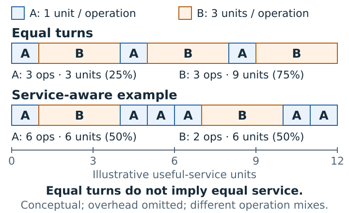
Both clients are always selectable; credits begin at zero and never reset. A costs one useful-service unit. You choose B’s cost and the policy. Ties go to A.
Changing a control starts a new example. Limit: 16 steps. Units represent useful service exactly; this is an ideal scheduler, not an execution of the current FC-PQ implementation.
For a fixed continuously selectable group, equal initial credits, no resets, and increments between zero and Cmax, choosing a minimum credit keeps the spread at most Cmax after every completed operation. Only that minimum is raised, by at most one largest operation; all other credits stay put and the minimum cannot decrease.
This is about accumulated service, not equal totals at every prefix, equal operation counts, or a wall-clock waiting deadline. With initial spread D0, the exact-min bound is max(D0, Cmax).
Choose the fairness metric before judging the scheduler.
03 / HOW EXISTING SOLUTIONS WORK
The unequal-service problem is not new. Existing locks address different parts of it: who goes next, how much service a client has already received, and where the next owner runs. Understanding those mechanisms makes the remaining problem more precise.
Ticket and MCS-style locks order acquisition attempts rather than letting every waiter race for an unlocked word. MCS also lets waiters poll separate queue-node state, reducing centralized polling traffic.
What remains: FIFO orders attempts, not accumulated service. A long operation still receives more service than a short one per turn; the next owner can execute on a different core.
NUMA-aware designs such as CNA and ShflLock favor handoffs within a socket to reduce expensive cross-socket movement of lock metadata and protected state.
What remains: locality preference alone is not usage accounting. Fairness depends on when other clients are allowed in; keeping a socket is not keeping one executing core.
Scheduler-Cooperative Locks (SCL) aim to align lock opportunity with CPU-scheduler shares. The user-space design, u-SCL, combines three steps:
Track each thread’s usage and target share. The opportunity metric includes time the lock could be acquired, not only useful critical-section work.
Compute a penalty on release. If a thread tries to reacquire before its allowance permits, make it wait so others have an opportunity.
Within a lock slice, one thread may acquire and release repeatedly. After expiry, hand off at release—not by interrupting a critical section.
What this buys: explicit allocation control and fewer ownership transfers within a slice. What it costs: accounting, penalties, and waiting for a slice. In u-SCL, reserving a slice can leave the lock unused while the slice owner executes non-critical work, even though another caller wants the lock. SCL’s kernel and reader–writer variants differ; this is not a claim that all SCL variants use the same slice policy.
The SCL paper defines lock opportunity in §3 and describes accounting, penalties, and lock slices in §4.2–4.3. Reserved or available time may give a thread an opportunity without completing a protected operation. The paper also explicitly contrasts u-SCL’s unused time during an owner’s non-critical work with the reader–writer variant (§4.5). Evaluate the intended contract rather than treating opportunity fairness as a bound on completed useful service.
Completely Fair Locking (CFL) treats lock occupation as a schedulable resource. Instead of relying on penalties in its default policy, it changes which waiter reaches the front of the queue.
Accumulate virtual lock hold time (vLHT). Priorities or configured group weights determine proportional shares.
A designated waiter acts as lock scheduler: it scans queue statistics and moves qualifying low-usage waiters forward.
Selection also considers NUMA locality. The selected caller still acquires ownership and executes its own critical section.
What this buys: usage-aware scheduling, group support, and locality-aware handoff without default forced cooldowns. The paper reports cases with both better fairness and better throughput. What remains: queue-policy work and actual ownership/data movement, even though NUMA scheduling can reduce that movement.
In the paper’s basic NUMA policy (§3), a promoted thread has vLHT below the waiting-thread average and belongs to the socket with the lowest per-socket average vLHT. A waiter traverses and reorders the queue; this is not the exact-min priority queue in our separate abstract service example. The paper also specifies group scheduling and initialization for new or returning threads (§3.4.2–3.4.3). Its mechanisms and claims should not be replaced with a different scheduler’s proof.
Do not forcibly idle an over-served caller when it can use an idle lock. This favors work conservation over stricter equalization in some workloads.
The optional mode makes over-served threads wait. It trades work conservation for tighter service control; it is disabled by default in the paper.
The optional mode holds the preferred socket for a period. It seeks better locality at the expense of short-term fairness.
These are policies described in the CFL paper (§3.4.4–3.4.5 and §4.6.1), not a claim that those options are enabled in this repository, and not new measurements from this project.
Existing work already schedules usage and balances locality with progress. The remaining question is what changes when choosing the next client also chooses the executing core.
04 / THE REMAINING DESIGN TENSION
The mechanisms above give the three-way tension a concrete basis. SCL controls opportunity through accounting, penalties, and slices; CFL normally reorders owners without forced cooldowns, with optional stricter or more locality-biased policies. None of this implies that fairness must always reduce performance.
In a caller-executed lock, the chosen owner also executes its operation. Choosing a different client on another core can therefore change both the service recipient and the location of execution.
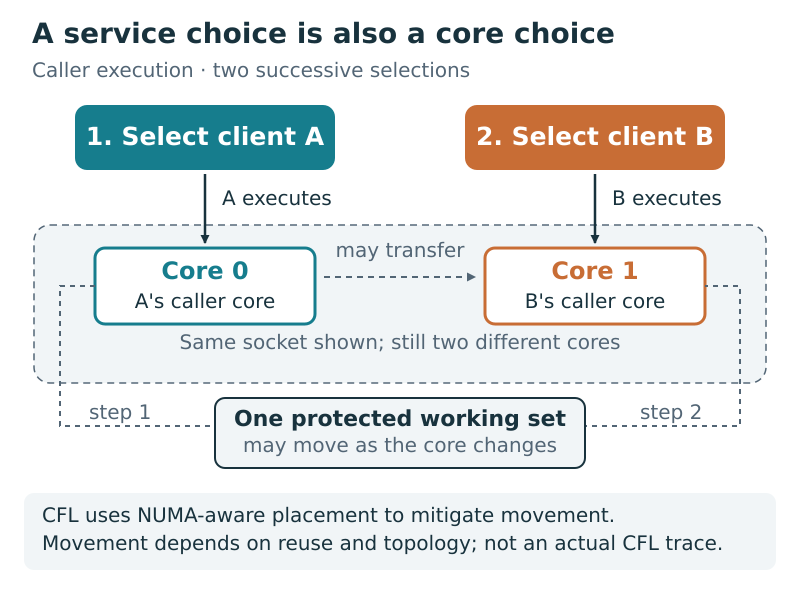
In caller-executed locks, service allocation and execution placement are tied together. That coupling can put three desirable properties in tension:
Bound service disparity among the stated competing clients, using the chosen service metric—not just equal turn counts.
Achieve high useful-work throughput under matched work and resources. Selection, handoff, and data movement all cost capacity.
When the lock can serve, do not deliberately leave its execution path idle while an otherwise runnable request is waiting.
“Trilemma” names a design tension here, not a universal choose-any-two theorem. Work-conserving does not mean overhead-free or maximum-throughput. Likewise, avoiding handoffs by idling is not a performance win: the idle time still reduces completed useful work.
For a fixed continuously backlogged, selectable cohort, a minimum-service scheduler can be both fair and work-conserving; execution costs determine its performance. The three goals are not logically incompatible.
A different contract—bounding lifetime service disparity against a client that stops submitting requests indefinitely—cannot also allow unlimited positive service to the remaining active client. One must eventually withhold service or change the cohort/accounting contract. Waiting alone does not reduce a cumulative service gap. Delegation cannot manufacture an absent client’s work or remove this contract conflict.
Assess work conservation against otherwise runnable demand, before fairness bans or cooldowns. Calling every withheld request “ineligible” would hide the issue rather than resolve it. Required protocol work and an unavailable or preempted executor are separate progress and cost questions, not automatically deliberate policy idle.
Can we share service fairly and keep runnable work moving without paying for an executor change at every change of client?
05 / THE ANALYSIS FRAMEWORK
To analyze the three-way tension, keep two ledgers. The first records who receives service under an explicit cohort and accounting contract. The second records what the chosen execution requires, including movement and uncovered idle time. Mixing them too early makes it easy to confuse a service guarantee with a timing guarantee.
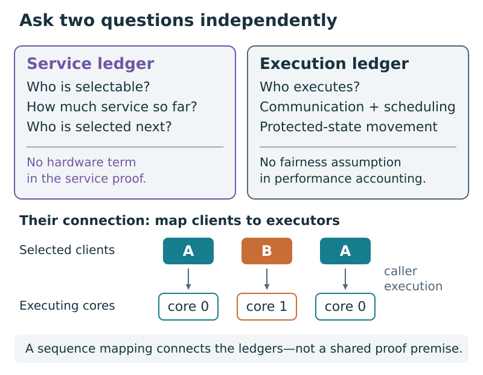
How far apart can clients’ accumulated service become under a stated selection and accounting rule?
Given the operations and executors, what work and communication delay completion or limit rate?
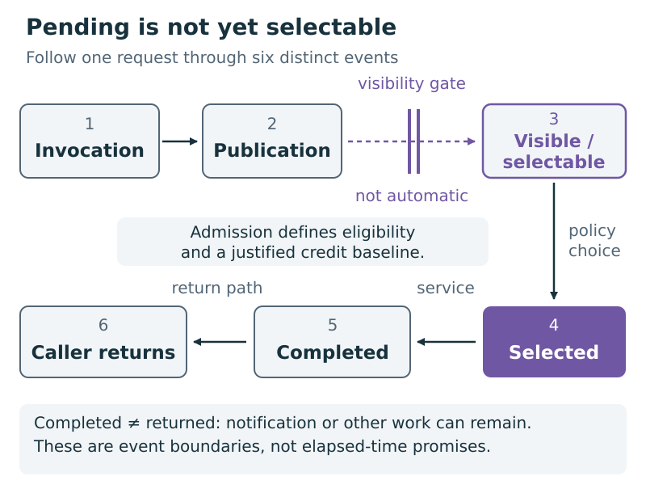
For work conservation, also ask whether runnable demand exists outside the policy’s choice set. A fair ordering of the visible queue says nothing by itself about requests withheld at admission or delayed in discovery.
A billing timer may include request handling as well as useful work. To transfer billed fairness to useful-service fairness, cumulative pairwise accounting error must also be bounded. Small individual timing errors alone do not establish that bound.
First state what is guaranteed. Then ask how much realizing it costs.
06 / THE CONNECTION
Consider only two backlogged clients on distinct fixed cores. Every operation adds the same positive service amount. If their persistent service credits must stay close after every operation, one client cannot run forever while the other waits.
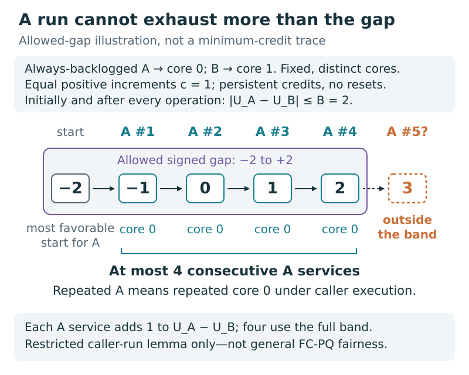
Let the allowed gap be B, each increment be c > 0, and B ≥ c. A client can start at most B behind and finish at most B ahead. Its consecutive run therefore has at most ⌊2B/c⌋ operations.
This uses distinct fixed caller cores, persistent credits, equal positive increments, and a gap bound at every service boundary. Turning executor changes into elapsed-time lower bounds additionally needs a certified non-overlapping movement cost. This is neither a universal impossibility result nor incremental overhead relative to an unfair lock.
Must changing the service recipient also change the executing core?
07 / THE ARCHITECTURAL RESPONSE
A delegation lock lets a combiner execute operations on clients’ behalf. The next client can receive service while the executor remains the same. The service scheduler still makes a choice; that choice no longer has to transfer execution.
This changes the trilemma’s execution coupling: an ideal scheduler can serve a low-credit ready request on the retained executor, rather than favor the current caller or wait for a cooldown. It can keep serving available requests without a required intra-batch ownership handoff. Whether that arrangement is fast still depends on request and scheduling costs; whether the implementation keeps work moving still depends on discovery, admission, and executor progress.
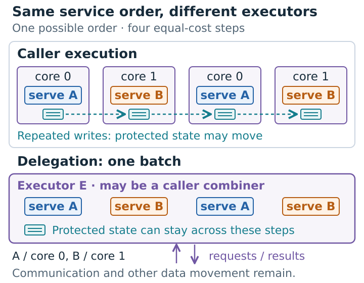
E can be caller A acting as combiner; this example does not add a dedicated core. Executor changes are counted, not cache transfers. No timing or residency is simulated.
Change who benefits without necessarily changing who executes.
08 / THE CONCRETE DESIGN
Think of a priority queue ordered by recorded service. The combiner finds a low-credit client, executes its delegate, charges the service, and publishes the result. The priority queue itself is sequential under combiner ownership; it is not a second concurrently shared scheduler.
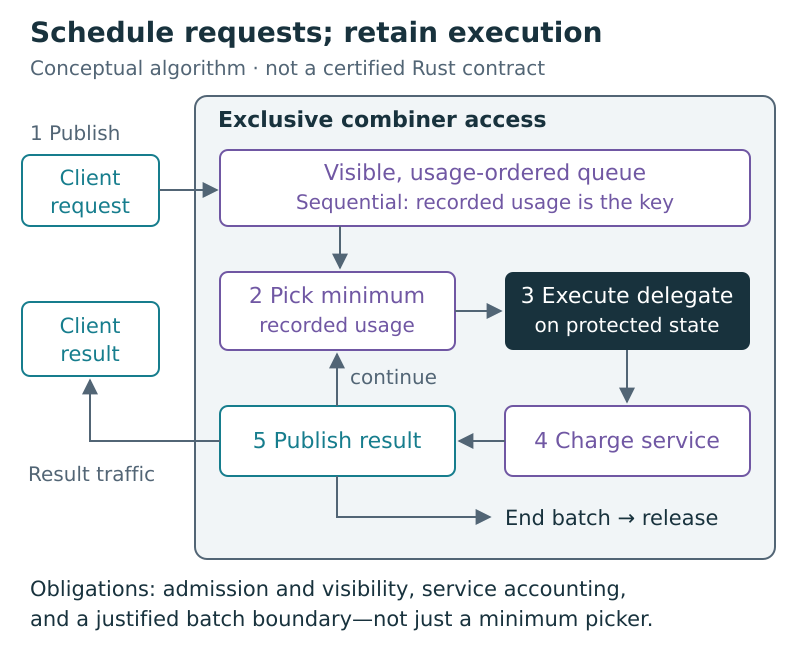
Does the charged interval represent the service promised?
Is a pending client visible, and is its starting credit justified?
When does combining stop, and when can the executor return?
The audit at baseline 56a02ab found that FC-PQ initializes newcomers from historical mean per-operation charge, not cumulative virtual service. Its post-pop clamp cannot promote an unpopped client; a reserved but unpublished announcement can stall discovery. The limit of 64 counts queue pops, not completed operations. Billing includes more than benchmark useful work, and the combiner timer is not a full-pass measurement.
These are reasons not to transfer the abstract guarantee unconditionally to the current Rust implementation. Fairness, competitive performance, and work conservation each need their own evidence; a priority queue alone certifies none of them. This explainer makes no production repair.
09 / WHY A COMMUNICATION MODEL HELPS
Request publication, execution, and result notification can overlap. Adding all their latencies as if they occurred one after another overcharges the critical path. Ignoring communication because it overlaps is also wrong: it still consumes endpoint and communication capacity.
Delivery delay along a dependency.
Endpoint time spent handling communication.
Pacing between sends or receives.
The participating execution resources.
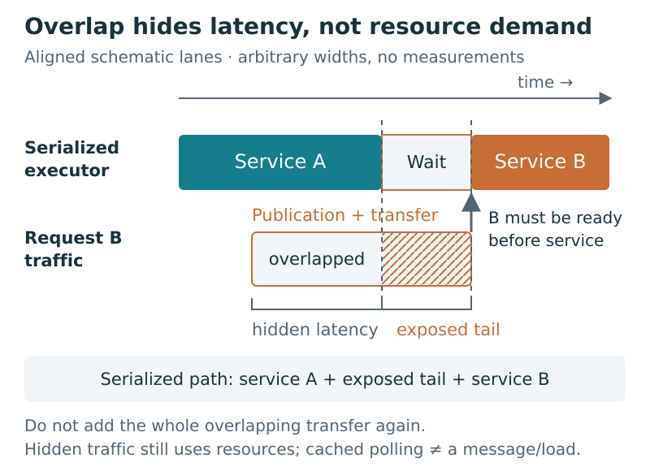
We borrow this separation from LogP and adapt it to cache-coherent shared memory. A cached spin load is not automatically a network message. Coherence events, topology, footprints, and protocol dependencies need their own mapping.
Useful operation execution; request/result communication; selection and accounting; protected-state movement; scheduler-state reacquisition; and pass administration. A cache miss charged to useful service must not be charged again as movement. The model also distinguishes completion from caller return and hidden latency from a rate limit.
The following simplified comparison assumes common warm operation cost, matched completed work and resources, sustained contention, and no uncovered idle time. The technical appendix restores differing warm costs and idle terms.
10 / THE CONDITIONAL ADVANTAGE
Delegation replaces some owner-handoff costs with request handling, scheduling, and combining costs. It wins in the simplified model only when the saved costs cover those remaining costs.
Warm work + protocol/policy + actual movement
Warm work + per-request costs + shared pass costs
Cancel the common warm work c. The question becomes whether h + m > d + a/b. Here b means actual completions per pass, not a configured budget.
This compact comparison assumes no uncovered idle time. If a policy leaves runnable work unserved, charge that idle time as well, as in the technical appendix. A caller’s entire cooldown is not system idle if other requests execute meanwhile. Work conservation and low per-completion overhead are separate questions.
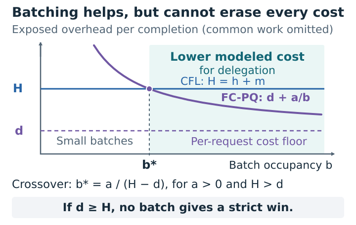
Arbitrary cost units. These controls hold costs fixed as occupancy changes; real protocols may not. Common warm work is omitted from both sides, so the bars show overhead, not total runtime or speedup.
Suppose h + m = 12, d = 4, and a = 24. At two completions per pass, FC-PQ overhead is 4 + 24/2 = 16: it loses. At three it is 12: a tie. At six it is 8: lower modeled overhead. If per-request cost rises to 14, no amount of batching beats 12.
Let g = h + m − d. For nonnegative costs and g > 0, strict advantage requires b > a/g. If g ≤ 0, no positive b produces a strict win. If a = 0 and g > 0, every positive b satisfies the inequality.
The mean b can be fractional, including below one when empty passes are counted. Only a fixed positive integer completed-batch size permits the integer threshold ⌊a/g⌋ + 1. Costs, including executor-change behavior, must remain applicable as occupancy changes.
CFL’s m credits its actual NUMA policy and local reuse; it is not a compulsory cross-socket transfer. FC-PQ’s pass cost includes remaining protected- and scheduler-state reacquisition. Lower serialized-path cost predicts higher throughput only when that path is the bottleneck. Nothing here is a measured hardware ranking.
Batching can remove a shared cost per request. It cannot remove every cost per request.
11 / TWO EASY COUNTING MISTAKES
A combining pass can attempt work without completing it. To measure amortization, divide total completions by total passes, including empty passes.
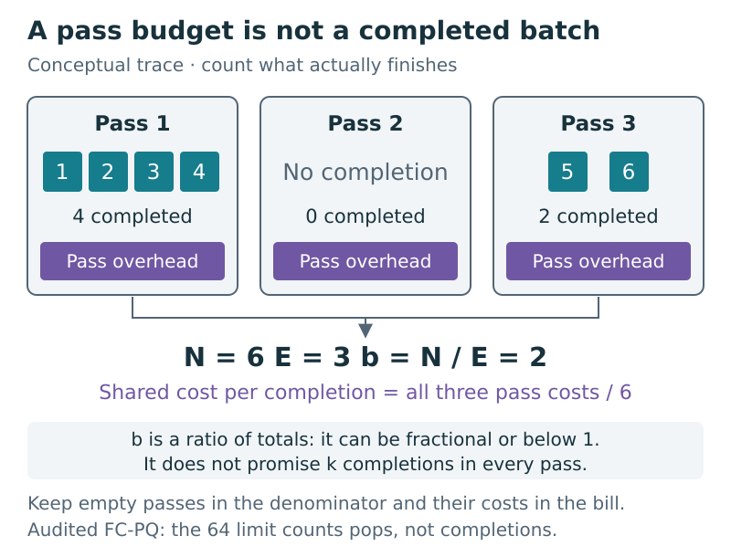
A larger batch can also keep an executor busy after its own request is finished. A waiting caller may observe its result and resume while the combiner continues other clients’ work.
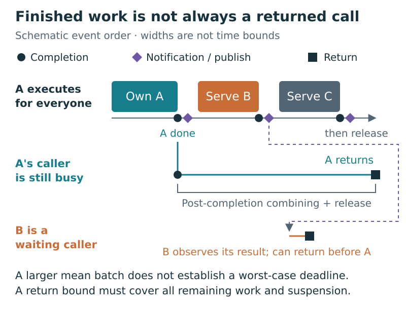
A mean says nothing about the longest pass. A return-tail bound requires an enforced maximum amount of remaining work and bounds on every part of that work, including unsuccessful attempts, notification, and suspension. A service-gap theorem does not provide those elapsed-time bounds.
For trace accounting, b = N/E and p = F/E, where F counts executor changes. With mean administration A and conditional change costs M + K, a = A + p(M + K). When F = 0, the change term is zero without defining conditional means.
12 / THE BOUNDARIES MATTER
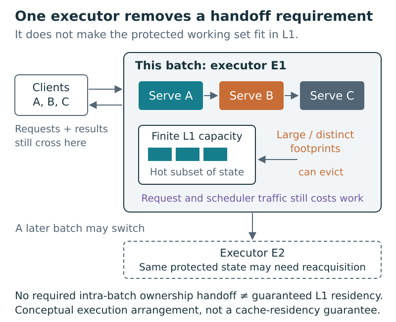
Small or empty passes leave overhead to amortize over few completions.
Explore sparse passes ↑Large payloads or scheduler metadata raise the per-request floor.
Effective CFL locality makes delegation’s extra work harder to justify.
Finishing your operation may not let you stop being the combiner.
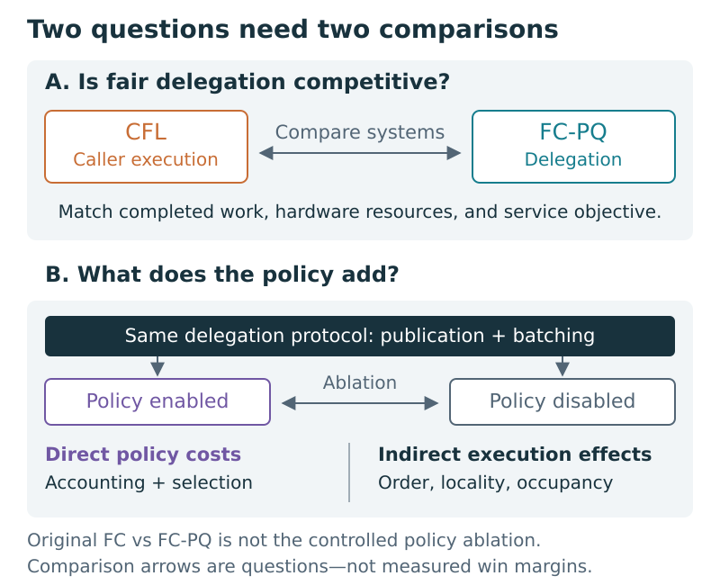
The useful claim is an explained operating region, not “delegation always wins.”
13 / WHAT THIS STORY ESTABLISHES
The diagrams show the architectural choice.
Service bounds and the cost inequality apply in their stated models.
Show the implementation meets the contract and predicts held-out behavior.
The source analyses and audit already exist. The current diagrams and teaching controls make them easier to understand. They do not fill the empirical or implementation gaps.
MOTIVATION-RESULT — A real application or controlled workload demonstrating the allocation problem.NOVELTY-POSITION — Broader prior-work comparison before fixing the novelty claim.EVAL-SETUP — Revisions, machine, core budget, workload, uncertainty, and instrumentation.EVAL-SERVICE — Cohort, accounting, service-gap, and admission evidence.EVAL-CFL — Matched-work CFL/FC-PQ results, crossovers, uncertainty, and losing regimes.EVAL-COST — Matched policy controls separating direct and indirect costs.EVAL-APPLICATION — Semantically equivalent application behavior and role-aware return latency.IMPLEMENTATION-REFINEMENT — Admission, visibility, persistent credits, billing, and correct measurements.ANALYTICAL-CHECKS — Additional finite residency/crossover checks, supplementary to the proofs.CALIBRATION-CONTRACT — Independently calibrated costs and predictions made before held-out runs.The existing eight-group check_model.py artifact does not cover the companion’s residency result or CFL-specific comparison. Browser checks of these teaching controls do not discharge that evidence slot or establish Rust correctness.
The idea to carry away
The goal is fair service, high useful-work throughput, and no deliberate idle while runnable work waits. Separating service from execution can ease that three-way tension. Whether the saving pays for scheduling, requests, and batches—and whether admission and progress preserve work conservation—must be established, not assumed.
Back to the visual story ↑